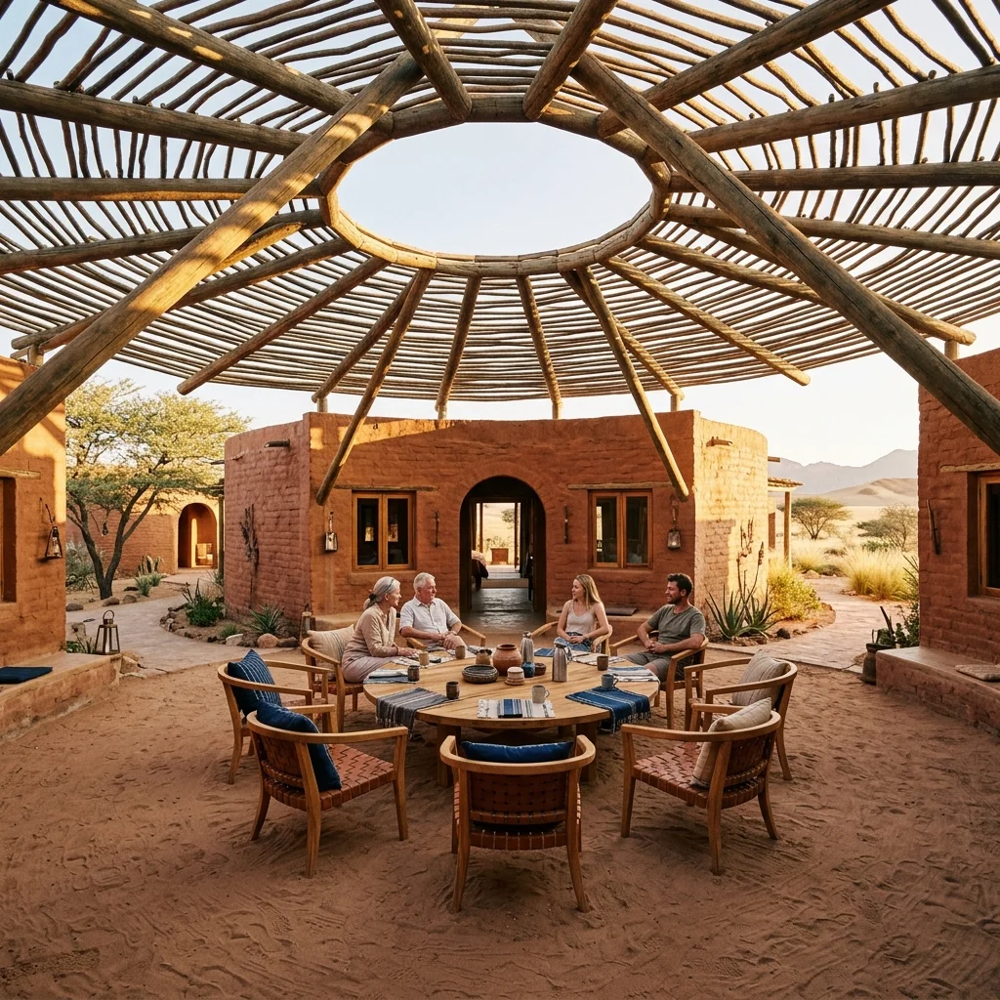
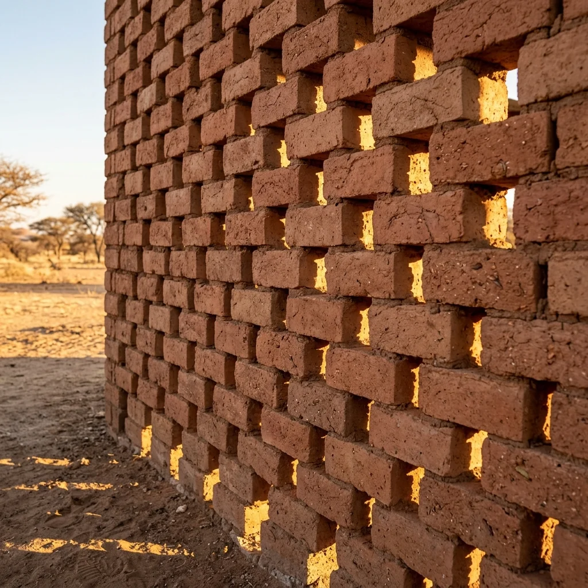

OMUUNDU WOKAPUNDA
Luogo della gente in viaggio - Namibia
Omuundu Wokapunda, che nella lingua locale Herrero significa "luogo della gente in viaggio", è un hub architettonico ecosostenibile situato nell'estremo e suggestivo paesaggio dello Skeleton Coast Park, in Namibia. Più che una semplice struttura ricettiva, è un manifesto di indipendenza e connessione con la natura, progettato per offrire riparo, risorse e uno spazio di condivisione a chi sceglie di esplorare il mondo in totale autonomia.
Il progetto è pensato specificamente per la comunità degli Overlander: viaggiatori indipendenti che esplorano territori remoti via terra con veicoli 4x4 o van attrezzati. Omuundu Wokapunda diventa un punto di ritrovo strategico nel deserto: un luogo dove sostare (con piazzole attrezzate per circa 20 veicoli), scambiare racconti di viaggio e ricaricare le proprie risorse.

La struttura si sviluppa seguendo il "Manifesto Cerchio e Raggiera", una scelta architettonica che va oltre la pura estetica per rispondere a precise necessità simboliche e funzionali. A livello spaziale, la pianta circolare favorisce l'inclusività eliminando le gerarchie e ponendo ogni individuo alla stessa distanza dal centro, stimolando così il dialogo tipico dei viaggiatori.
Dal punto di vista strutturale e climatico, questa geometria distribuisce meglio i carichi per resistere ai forti venti della zona, riduce la dispersione termica e ottimizza l'uso della luce solare durante tutto l'arco della giornata.
L'edificio abbraccia la filosofia del "chilometro zero" impiegando tecniche costruttive tradizionali: le pareti sono realizzate con mattoni in terra cruda prodotti direttamente sul posto, mentre i pavimenti sono in terra battuta. Questa combinazione materica garantisce un eccezionale isolamento termico e un impatto ambientale minimo.
Per combattere il calore estremo senza ricorrere alla climatizzazione meccanica, la ventilazione passiva è affidata alla disposizione "sfalzata" dei mattoni: questa muratura traforata permette un flusso d'aria naturale continuo in grado di espellere l'aria calda e far entrare quella fresca.

Il complesso è alimentato al 100% da energia rinnovabile tramite un sistema ibrido: una copertura di pannelli solari da circa 60-65 kWp garantisce il fabbisogno primario, supportata da un impianto eolico a 4 turbine che sfrutta i venti costanti generati dalla corrente del Benguela.
L'autonomia idrica è invece assicurata da un impianto ad osmosi inversa capace di desalinizzare l'acqua di mare, fornendo fino a 30.000 litri di acqua pura al giorno per i servizi e la potabilità.
L'intera architettura è protetta da un accurato piano di afforestazione che impiega flora locale resistente alla siccità, come l'Acacia erioloba, arbusti di Ziziphus mucronata ed erbe perenni. Questo sistema verde crea una barriera naturale fondamentale per rallentare i forti venti e bloccare le tempeste di sabbia.